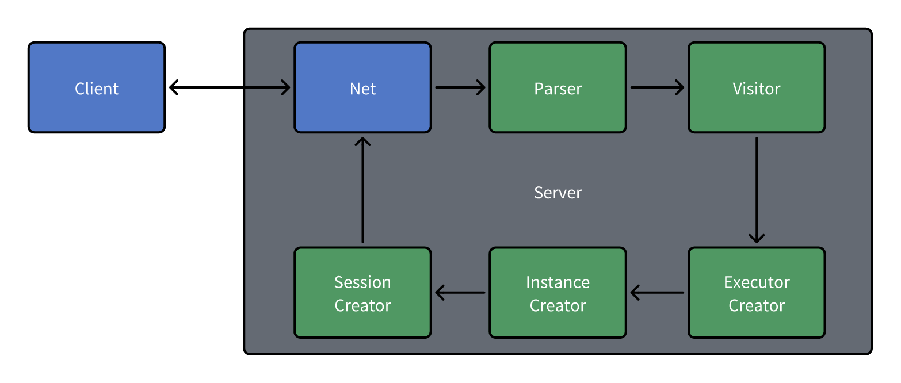
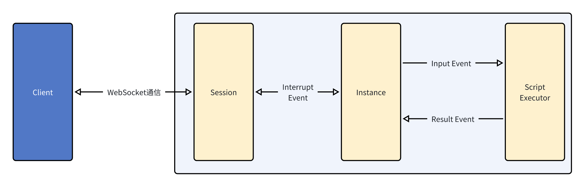

脚本从客户端发送，到服务端生成运行时的过程如下图所示  上述流程的具体解析如下:
有图示如下
在执行完上述流程后，客户端就可以利用websocket与服务端进行通信，从而实现与运行时的交互。 对于CLI版本，上述的Net模块直接被一个本地的命令行交互模块替代，从而实现了本地的命令行交互版本。
整个运行时采用事件驱动的方式运行，具体运行方式如下所示  上述流程的具体解析如下:
有一个简易的执行流程图示意如下
Parser模块负责将脚本解析为语法树，Visitor模块负责遍历语法树，将语法树解析为内部的数据结构(即stmt目录下的类)。这俩阶段被封装在类 PaserStage的函数 handle_script中，具体实现如下:
/**
* Handles the parsing of a script.
* @param script The script to be parsed.
* @returns The parsed script statement or null if parsing fails.
*/
handle_script(script: string): ScriptStmt | null {
// 先进行词法分析
let lexer = new cslLexer(CharStreams.fromString(script));
let tokens = new CommonTokenStream(lexer);
// 语法分析
let parser = new cslParser(tokens);
let visitor = new ScriptVisitor();
let stmt = visitor.visit(parser.script());
return stmt;
}
Parser部分主要通过 antlr4ng库提供的相关工具实现。利用此库的CLI工具，在 src/parser目录下生成对应的词法分析器和语法分析器，然后在 parser目录下生成对应的Visitor模块，以供后续使用。
Vistor模块目录位于 src/visitor下，主要用于遍历语法树，将语法树解析为内部的数据结构(具体为 stmt和 expr目录下的类)。每一个 stmt代表一个语法结构，其通过
成员函数，将该语法结构有效的信息暴露出来，给Executor生成使用。
Executor的接口定义在此
Executor为运行时的重要组成部分。Instance通过对Executor的操作，来不断地处理 客户传来的输入信息。以下将分为创建和运行两部分来介绍Executor模块
每个语句都会对应着一个Executor，Executor的构造函数一般会接受对应的stmt作为参数。经历完上一阶段后，Visitor模块会返回顶层脚本描述类 ScriptStmt，随后在 SessionStage类中的 handle_event函数中调用 ScriptExecutor类的构造函数，
从而实现主执行器的创建。
每一个Executor会暴露三个接口，分别为 open,next和 close,它们的用途分别如下:
open: 告诉Executor准备开始执行，Executor将初始化自己的状态和运行环境，开辟一块新的作用域（如果需要的话）,随后返回next: Executor执行的主逻辑。在上文的图中，Instance传来的Input Event会在这里被处理，每次处理结束之后都会返回Result Event，告诉Instance本轮Executor的执行结果，让Instance决定下一步的操作。close: 告诉Executor准备结束执行，Executor将清理自己的状态和运行环境，随后返回
一个Executor的生命周期从 open到 close，在这个过程中，Executor会不断地调用 next函数，直到 next函数返回一个Result Event，才会停止调用 next函数，随后调用 close函数，结束Executor的生命周期。Instance的详细定义在此
Instance模块主要用于维护一个客服机器人对象。一个Instance只会拥有一个Executor，模块位置在 src/runtime/instance.ts中
Instance主要暴露了如下几个接口:
start: 启动Instance，Instance会调用主执行器的 open函数，将Instance的状态置为 runningrun: 开始运行Instance。Instance会进入一个事件循环，它会不断地调用Executor的 next函数，直到Executor返回的Result Event提示其需要做对应中断操作，才会按需调用参数中传入的中断回调函数，向上层Session发送通知（一般为输入输出函数）,回调函数返回后继续执行事件循环。在执行完毕后，会先利用中断回调函数向Session发出退出的通知，随后退出事件循环。push_input: 为了实现异步的输入和语法中超时跳过输入的操作，Instance向Session暴露了一个 push_input函数，用于将输入信息推入到Instance的输入队列中，等待Instance的事件循环处理。在C/S版本中, Session模块维护了一个WebSocket连接，并且实现了一个传给Instance的
中断回调函数 on_interrupt_event，用于处理Instance的中断事件。在CLI版本中，Session模块被一个本地的命令行交互模块替代，从而实现了本地的命令行交互版本。
模块详细说明在此
这个模块主要用于维护运行时的上下文环境，它会在Instance的 start函数中被创建，随后传给Instance的Executor。Context模块主要暴露了如下几个接口:
enter_new_scope: 进入一个新的作用域，Context会将当前的作用域压入作用域栈中，随后创建一个新的作用域，作为当前的作用域exit_current_scope: 退出当前的作用域，Context会将当前的作用域弹出作用域栈，随后将作用域栈的栈顶作为当前的作用域set_local_symbol: 设置一个局部变量，如果当前作用域中已经存在同名的变量，则会覆盖原有的变量set_global_symbol: 设置一个全局变量，如果当前作用域中已经存在同名的变量，则会覆盖原有的变量assign_local_symbol: 给一个非全局变量赋值，如果在作用域栈中找不到对应的变量，则会抛出异常assign_global_symbol: 给一个全局变量赋值，如果在全局符号表中找不到对应的变量，则会抛出异常get_symbol: 获取一个变量的值，如果在所有作用域(包括全局符号表)中找不到对应的变量，则会返回undefinedis_in_scope: 判断一个变量是否在局部作用域中，测试用这个模块会在每一个Executor的open函数中被接收，由Executor根据自身情况维护Context的状态。
表达式的接口具体文档在此 为了灵活支持各种表达式，在本脚本语言中的一切可计算单元均被视为表达式。故在本脚本语言中，表达式可以分为下面几种类型:
ArithmeticExpr)ComparisonExpr)ConjunctionExpr)PostfixExpr)UnaryExpression)ValueExpr)ArrayExpr)JsonExpr)FieldExpr)TemplateStringExpr)表达式在Vistor访问AST时一并被创建。其对外暴露接口如下
get_value 获取表达式的值，需要当前的上下文try_get_value 在不用上下文的情况下尝试求值，用于常量解析和表达式优化get_type 获取表达式的类型get_value_type 获取计算后得到的值类型
对于模板字符串，还额外暴露了如下接口get_raw_value 在正常的 get_value函数中,模版字符串的变量和常量部分之间会加入空格，此函数会返回直接拼接的结果。由于本程序采用事件驱动方式进行，故此模块贯穿整个程序。在程序中主要有定义如下事件
中断事件的类型有下
export enum InterruptReason {
EXIT, // 退出
INPUT, // 输入
OUTPUT, // 输出
ERROR, // 报错
SHOW_MENU,// 显示菜单
MOCK, // 用于测试
}
这个事件主要在Instance和Session交互时使用, 用于承载必要的信息, 以便Instance进行下一步的操作。 详细文档请查看这里
在新建会话时会创建此事件。此事件在执行后，会生成一个新的实例，提供给对应的Session维护。 详细文档请查看这里
在Session Stage时被创建，用于搭载解析脚本后得到的Stmt结果 详细文档请查看这里
由Instance发起，在Executor的next函数中被传递，用于搭载输入信息 详细文档请查看这里
由Executor生成, 被传递给Instance, 用于搭载执行结果 详细文档请查看这里
为了测试各个模块的正确性，本项目提供了几个相关测试桩
ExecutorMock,位于 src\executor\executor.tsStmtMock,位于 src\stmt\stmt.tsCommandStmtMock,位于 src\stmt\command_stmt.tsContextMock,位于 src\context\context.tsInterruptEventMock,位于 src\event\interrupt_event.ts自动测试相关代码在 test目录下，对应模块的测试文件也对应 src目录，存在相同的路径下。
自动测试采用ava测试框架编写，仅需在项目根目录下运行 yarn test即可运行所有测试用例。
在 docs/case中提供了一些示例脚本，可以提供给用户手动测试;
若想测试表达式计算,可在根目录下执行 yarn test:calc,即可调出CLI交互界面,实时计算表达式结果
若想查看语法树生成是否正确，可在根目录下执行 yarn test:ast,即可按提示输入脚本，查看生成的语法树。